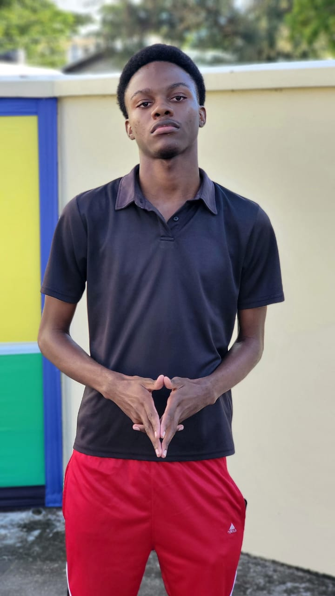

Hello and thank you for visiting my corner of the internet! This website is a reflection of who am I and a blend of my professional experiences, personal growth, and the unique personality that shapes my journey. Here, you'll find insights into my career path, the values that drive me, and the ongoing quest for self-improvement. Join me as I share my story, my passions, and the lessons I've learned along the way. Together, let's explore the many facets of life and growth!

Back to Top of Page